Las Vegas Travel Guide
Internationally renowned major resort city, known primarily for its gambling, shopping, fine dining, entertainment, and nightlife.


Places to See in Las Vegas

Steven Lek, CC BY-SA 4.0, via Wikimedia Commons; Image Size Adjusted

-400.jpg)
Tomás Del Coro, CC BY-SA 2.0, via Wikimedia Commons; Image Size Adjusted
Caesars Palace
Luxury hotel and casino is one of Las Vegas's largest and best known landmarks, giving guests a sense of life during the Roman Empire
-400.jpg)
Sergiy Galyonkin, CC BY-SA 2.0, via Wikimedia Commons; Image Size Adjusted


Clément Bardot, CC BY-SA 4.0, via Wikimedia Commons; Image Size Adjusted
-400.jpg)
Alberto-g-rovi, CC BY 3.0, via Wikimedia Commons; Image Size Adjusted

Tomás Del Coro, CC BY-SA 2.0, via Wikimedia Commons; Image Size Adjusted
_Front_Entrance-400.jpg)
Laslovarga, CC BY-SA 3.0, via Wikimedia Commons; Image Size Adjusted
Flamingo Las Vegas Hotel & Casino
Casino hotel with architectural theme reminiscent of the Art Deco and Streamline Moderne style of Miami and South Beach


Opened in 1973 and rebranded as Harrah’s in 1992, Harrah’s Las Vegas is a bustling resort featuring a full-service casino, multiple dining options, live entertainment venues, and a hotel tower with thousands of rooms. Its central location on the Strip makes it a convenient hub for visitors seeking both gaming excitement and easy access to nearby attractions.

Farragutful, CC BY-SA 4.0, via Wikimedia Commons; Image Size Adjusted
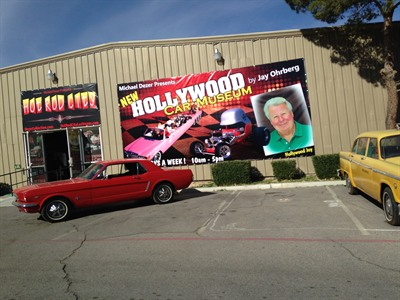
Hollywood cars Museum, CC BY-SA 4.0, via Wikimedia Commons; Image Size Adjusted
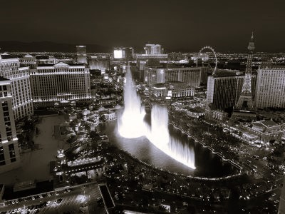
Nate Stiller, CC BY-SA 3.0, via Wikimedia Commons; Image Size Adjusted

Farragutful, CC BY-SA 4.0, via Wikimedia Commons; Image Size Adjusted
The LINQ Hotel + Experience
Casino hotel opened as the Flamingo Capri in 1959, on property located directly north of the original Flamingo resort

-400.jpg)

-400.jpg)
Reinhard Link, CC BY-SA 2.0, via Wikimedia Commons; Image Size Adjusted

Tuxyso, CC BY-SA 3.0, via Wikimedia Commons; Image Size Adjusted
-400.jpg)
Alex Proimos, CC BY 2.0, via Wikimedia Commons; Image Size Adjusted
The Palazzo at The Venetian Resort
Luxury hotel and casino resort is the tallest completed building in Nevada and offers luxury in an Italian Renaissance ambiance

Jürgen Matern, CC BY-SA 3.0, via Wikimedia Commons; Image Size Adjusted
Paris Las Vegas
A French-themed resort featuring a half-scale Eiffel Tower replica, extensive gaming space, diverse dining and entertainment venues, and a rooftop pool with cabanas.
-400.jpg)
Han Zheng, CC BY-SA 2.0, via Wikimedia Commons; Image Size Adjusted
Opened in 1996 as Monte Carlo and rebranded in 2018, Park MGM is a stylish resort offering a smoke-free casino, modern guest rooms, and a vibrant entertainment scene. The property features acclaimed dining options, including celebrity chef restaurants, and is home to the Dolby Live theater, which hosts major concerts and residencies.

Planet Hollywood Las Vegas Resort & Casino
Casino hotel with architecture having a 'Hollywood hip' theme that eschews the popular Art-Deco glamour of similarly imaged venues

Resorts World Las Vegas
Modern mega-resort featuring three luxury hotel brands, a vast casino, world-class dining, and entertainment across a sprawling multi-tower complex.

SAHARA Las Vegas
Hotel and casino anchors the northern end of the Las Vegas Strip, at the corner of Sahara Avenue
-400.jpg)
Sphere
State-of-the-art entertainment venue featuring immersive concerts, cinematic experiences, and a 16K wraparound LED screen inside a futuristic spherical structure.

Mariordo (Mario Roberto Durán Ortiz), CC BY-SA 4.0, via Wikimedia Commons; Image Size Adjusted
-400.jpg)
Ronnie Macdonald, CC BY 2.0, via Wikimedia Commons; Image Size Adjusted


Welcome to Fabulous Las Vegas Sign
Iconic mid-century neon sign marking the southern gateway to the Las Vegas Strip, offering a 24/7 photo opportunity and symbolizing the city's vibrant spirit.


APK, CC BY-SA 4.0, via Wikimedia Commons; Image Size Adjusted
Circa Resort and Casino
Luxury adults-only resort offering a two-story casino, rooftop pool amphitheater, world’s largest sportsbook, and fine dining experiences in a high-energy, retro-modern setting.
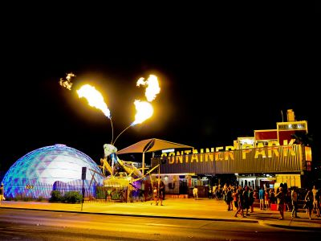
Tomás Del Coro, CC BY-SA 2.0, via Wikimedia Commons; Image Size Adjusted
-400.jpg)
Tomás Del Coro, CC BY-SA 2.0, via Wikimedia Commons; Image Size Adjusted
Lou Ruvo Center for Brain Health
Architecturally striking medical facility dedicated to the diagnosis, treatment, and research of neurodegenerative diseases and brain health.

Kremerbi, CC BY-SA 3.0, via Wikimedia Commons; Image Size Adjusted
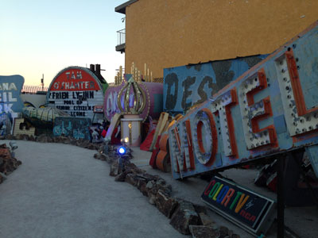
Gilda, CC BY-SA 2.0, via Wikimedia Commons; Image Size Adjusted
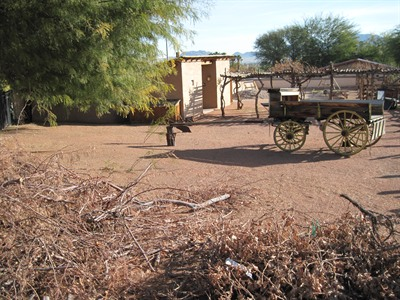
kl91711, CC BY 3.0, via Wikimedia Commons; Image Size Adjusted
Plaza Hotel and Casino
Historic downtown resort offering classic Vegas charm with modern rooms, rooftop pool, casino gaming, and diverse dining options.
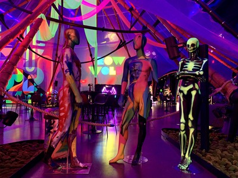
APK, CC BY-SA 4.0, via Wikimedia Commons; Image Size Adjusted
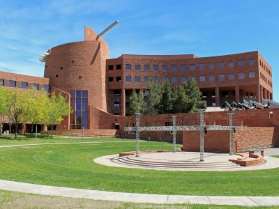
Coolcaesar, CC BY-SA 4.0, via Wikimedia Commons; Image Size Adjusted
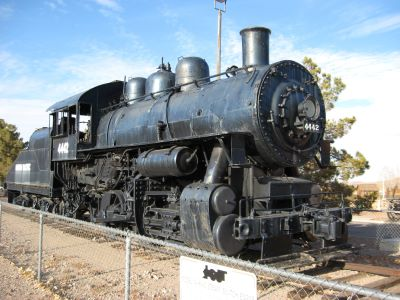
Ken Eckert, CC BY-SA 4.0, via Wikimedia Commons; Image Size Adjusted


.jpg){kind=link}
.jpg){kind=link}

.jpg){kind=link}

_Front_Entrance.JPG){kind=link}


.jpg){kind=link}

.jpg){kind=link}

.jpg){kind=link}

.jpg){kind=link}

.jpg){kind=link}
.jpg){kind=link}

.jpg){kind=link}


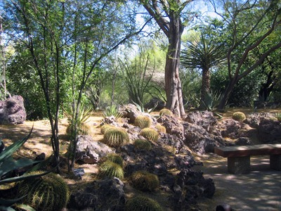
Acroterion, CC BY-SA 4.0, via Wikimedia Commons; Image Size Adjusted

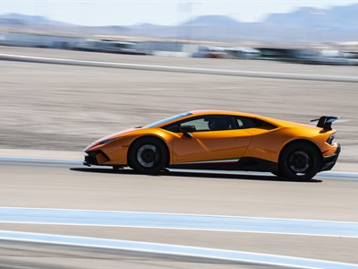
Joshua Kleinholz, Public domain, via Wikimedia Commons; Image Size Adjusted

Steven Lek, CC BY-SA 4.0, via Wikimedia Commons; Image Size Adjusted

Miguel Hermoso Cuesta, CC BY-SA 3.0, via Wikimedia Commons; Image Size Adjusted

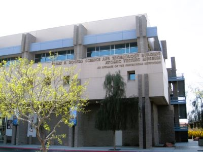
brewbooks, CC BY-SA 2.0, via Wikimedia Commons; Image Size Adjusted

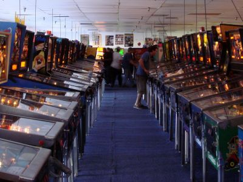
Bobak Ha'Eri, CC BY 3.0, via Wikimedia Commons; Image Size Adjusted

Pinball Hall of Fame
Nonprofit museum housing the world’s largest collection of playable pinball machines, spanning decades of arcade history in a retro, hands-on environment.
Steven Lek, CC BY-SA 4.0, via Wikimedia Commons; Image Size Adjusted
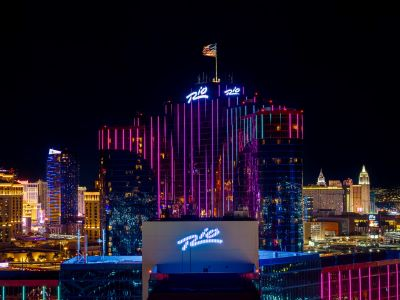
Riolasvegasdigital, CC BY 4.0, via Wikimedia Commons; Image Size Adjusted

Rio All-Suite Hotel & Casino
Hotel and casino near the Las Vegas Strip named after the city of Rio de Janeiro and is influenced by Brazilian culture
Shelby Heritage Center
Automotive heritage museum showcasing a rotating collection of Shelby vehicles and memorabilia, located beside an active performance car production facility.
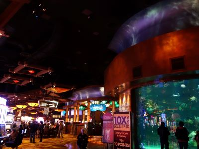
kennejima, CC BY 2.0, via Wikimedia Commons; Image Size Adjusted

Steven Lek, CC BY-SA 4.0, via Wikimedia Commons; Image Size Adjusted
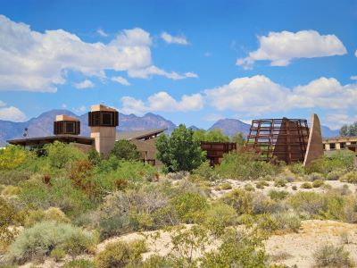
Renee Grayson, CC BY 2.0, via Wikimedia Commons; Image Size Adjusted
.jpg){kind=link}
Steven Lek, CC BY-SA 4.0, via Wikimedia Commons; Image Size Adjusted
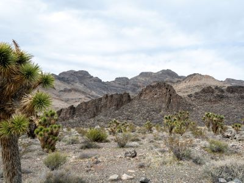
Matthew Dillon, CC BY 2.0, via Wikimedia Commons; Image Size Adjusted

Overview
Las Vegas, Nevada, is one of the most recognizable tourist destinations on Earth. Set in the Mojave Desert and nicknamed the "Entertainment Capital of the World" and "Sin City", the city is famous for its mega-resort casinos, glittering neon skyline, headline entertainment, and a culture of 24-hour indulgence in which gambling, dining, shows, and nightlife all happen under one roof. Its image has been shaped by decades of film, television, music, and literature, and few American cities are as instantly identifiable from a single photograph of their skyline.
Las Vegas is significant as both an economic engine and a cultural icon. Tourism, hospitality, and conventions drive the economy of Nevada, and the city hosts some of the largest trade shows in the country, major sporting events, and a growing roster of professional sports teams. It is popular because it delivers variety at nearly every price point: visitors come to gamble, see world-class shows, eat at celebrity-chef restaurants, party at superclubs, lounge at resort pools, shop, and attend concerts and conventions. Many also come to see the architecture of the resorts themselves, such as the Eiffel Tower replica, the Venetian canals, the Luxor pyramid, the Bellagio fountains, and the giant Sphere, and to use the city as a base for the dramatic desert landscapes surrounding it.
History
The Las Vegas Valley takes its name from the Spanish for "the meadows," a reference to the spring-fed grasslands that once made it an oasis on the Old Spanish Trail, which Antonio Armijo's trading party traveled in 1829. Mormon missionaries built a fort here in 1855, but the modern city began on May 15, 1905, when the railroad auctioned off lots in a townsite near Fremont Street, and Las Vegas was incorporated as a city in 1911. Construction of Hoover Dam from 1931 to 1936 brought workers and money to the region, and the same year as the dam project began Nevada legalized casino gambling. Early resorts such as El Rancho Vegas (1941) and the Flamingo (1946, associated with Bugsy Siegel) established the Strip, and organized crime figures helped finance much of the postwar boom. Corporate ownership, led by investors such as Howard Hughes, replaced the mob in the 1960s and 1970s, and the opening of The Mirage in 1989 launched the era of themed mega-resorts that continued through Bellagio, Venetian, Wynn, CityCenter, and the Sphere.
Las Vegas Strip
The Las Vegas Strip is the roughly 4.2-mile stretch of Las Vegas Boulevard South that holds most of the city's largest resorts and casinos. Despite the name "Las Vegas," the Strip sits just south of the city limits in the unincorporated townships of Paradise and Winchester. It runs from the Sahara area in the north to Mandalay Bay in the south, with the Welcome to Fabulous Las Vegas sign marking the southern edge of the tourist corridor. The Strip is best explored by dividing it into three areas, the South, Central, and North Strip, and a walk along it passes pedestrian bridges, fountains, volcanoes, street performers, and enormous themed lobbies. The best time to walk it is in the evening, when temperatures are lower and the lights are at their best.
Central Strip
The Central Strip, from The Cosmopolitan north to Wynn and Encore, is the busiest and most famous part of Las Vegas. The Cosmopolitan is known for its modern design, restaurants, and nightlife, while the neighboring Bellagio is home to the dancing Fountains of Bellagio, the Conservatory and Botanical Gardens, and the Bellagio Gallery of Fine Art. Caesars Palace and its Forum Shops offer Roman-themed luxury, and Paris Las Vegas features a half-scale Eiffel Tower. Also in this stretch are the Flamingo, The LINQ and its High Roller observation wheel, Horseshoe, Planet Hollywood, the Venetian and Palazzo with indoor gondola rides, Treasure Island, Fashion Show mall, and the Sphere just east of the Venetian. The Mirage, a longtime landmark with an outdoor volcano, closed in 2024 and is being redeveloped. At the north end, Wynn and Encore are two of the most luxurious resorts in the country.
South Strip
The South Strip runs from Aria south to the Welcome to Fabulous Las Vegas sign. Aria anchors the modern CityCenter complex, which also includes Park MGM and the Cosmopolitan next door, and the area continues south with New York-New York and its roller coaster, the MGM Grand, one of the largest hotels in the country, the medieval-themed Excalibur, the pyramid-shaped Luxor, and Mandalay Bay with its beach-style pool complex and shark aquarium. A free tram links Excalibur, Luxor, and Mandalay Bay, and the area is close to T-Mobile Arena and Allegiant Stadium, home of the Raiders. The former Tropicana site is being redeveloped for a Major League Baseball stadium for the Athletics. At the far south end, the iconic 1959 sign is a popular photo stop.
North Strip
The North Strip, from Resorts World to the Strat, is a mixture of new development and classic Las Vegas. Resorts World opened in 2021 on the former Stardust site and has several hotel brands, restaurants, and a large casino, while Fontainebleau Las Vegas, which opened in 2023, brought a large, modern luxury resort to the area. Nearby are the Sahara, a recently revived classic property, and the family-friendly Circus Circus, with an indoor amusement park and midway. The Strat's 1,149-foot tower is the tallest freestanding observation tower in the United States and has thrill rides at the top, and from its observation deck you can look over the entire valley. The North Strip generally offers lower prices than the center of the Strip, and it is close to the Las Vegas Convention Center, where the Monorail stops.
Downtown Las Vegas and Fremont Street
Downtown Las Vegas is the original city center and the home of the first casinos. The Fremont Street Experience is a pedestrian mall covered by a giant LED canopy that hosts nightly light shows, live music, and zipline rides under the canopy, and it is surrounded by historic casinos such as the Golden Nugget, Binion's, Four Queens, and Fremont, as well as the newer Circa Resort & Casino. The Fremont East Entertainment District has bars, restaurants, and street art, the Arts District has galleries and breweries, and the Container Park has shops and a fire-breathing praying mantis sculpture. Downtown has a more relaxed, old-school atmosphere, typically with lower gambling minimums and hotel rates than the Strip, and it is home to the Neon Museum and the Mob Museum.
Off the Strip
There is a lot to do away from the Strip and Downtown. Local casinos such as Red Rock Resort, Green Valley Ranch, Palms, Rio, and Sam's Town offer large gaming floors, better value, and easier parking, and many of the city's best restaurants are in Chinatown on Spring Mountain Road. Attractions include AREA15 with its immersive art and entertainment, the Springs Preserve, the Pinball Hall of Fame, the Ethel M Chocolate Factory and Cactus Garden, and Allegiant Stadium. West of the city, Red Rock Canyon National Conservation Area has a 13-mile scenic drive, hiking, and rock climbing among red sandstone cliffs, and about 30 miles south of the city on Interstate 15, Seven Magic Mountains is a colorful art installation of stacked boulders in the desert.
Cuisine
Las Vegas has one of the best restaurant scenes in the United States, with a concentration of celebrity chefs matched by few other cities. The Michelin Guide briefly covered Las Vegas in 2008 and 2009, awarding stars to a number of restaurants, including those of Joël Robuchon, Guy Savoy, and Alain Ducasse, and the city continues to have award-winning fine dining including James Beard Award-winning chefs. Visitors can choose from French, Italian, Japanese sushi and omakase, steakhouses, Korean barbecue, authentic Chinese and Thai in Chinatown, Mexican, Indian, and countless other cuisines. For a cheaper meal, you can eat at food halls, diners, and street taco stands, or try the all-you-can-eat buffets for which the city is famous, including Bacchanal at Caesars Palace and the Wynn Buffet. Reservations at top restaurants should be made well in advance, especially on weekends.
Las Vegas Shows
Entertainment is one of the biggest reasons to visit Las Vegas. Cirque du Soleil has several permanent shows, including O at Bellagio, Kà at MGM Grand, and Michael Jackson ONE at Mandalay Bay, and there are also magic shows, comedy clubs, burlesque, Broadway-style productions, and tribute shows. The Strip has a long tradition of star residencies by performers such as Frank Sinatra, Elvis Presley, Celine Dion, Cher, Elton John, Britney Spears, Lady Gaga, and many others, and in recent years the Sphere has staged residencies and immersive shows. Large events are held at T-Mobile Arena and Allegiant Stadium, and the city hosts the Las Vegas Grand Prix. Show schedules change often, so check current listings and book tickets in advance for popular shows.
Gambling, Alcohol, and Nightlife
Gambling is legal in Nevada, and virtually every casino in Las Vegas has slot machines, table games such as blackjack, craps, roulette, and baccarat, poker rooms, and a sportsbook. The minimum age to gamble and to drink is 21. Strip casinos tend to have higher table minimums, while Downtown and off-Strip casinos usually offer lower minimums and better odds on slots and tables. Alcohol laws are relaxed: bars are open 24 hours, drinking in public is allowed on the Strip and Fremont Street in plastic cups or containers (not glass), and complimentary drinks are generally served to those actively gambling, although tipping the server is customary. Las Vegas is also one of the nightlife capitals of the world, with superclubs such as XS, Omnia, Hakkasan, and Drai's, day clubs and pool parties in spring and summer, rooftop lounges, and DJ residencies by world-famous artists.
Getting Around and Parking
Harry Reid International Airport is only about 3 to 4 miles from the Strip, and a taxi or rideshare from the airport to most Strip hotels takes 10 to 20 minutes. Visitors who stay on the Strip often do not need a rental car and can use walking, taxis, rideshare services such as Uber and Lyft, hotel trams, and the Las Vegas Monorail, a paid 3.9-mile line running along the east side of the Strip from the MGM Grand to the Sahara. Shuttles and the RTC buses are cheaper, and the Deuce and SDX routes run along the Strip. Distances on the Strip are deceptive, so walking between resorts can take longer than expected, especially in the heat. A rental car is useful for Red Rock Canyon, Hoover Dam, Valley of Fire, and other excursions, and parking at many Strip resorts is now paid, although some off-Strip casinos and a few Strip properties still offer free self-parking. Many hotels also charge mandatory daily resort fees in addition to the room rate.
Resort Fees
Resort fees are one of the biggest surprises for first-time visitors to Las Vegas. Most Strip hotels and many off-Strip and Downtown properties add a mandatory daily fee, typically somewhere between $25 and $60 or more per room per night plus tax, on top of the advertised nightly rate. The fee generally covers amenities such as Wi-Fi, pool and fitness center access, in-room phone calls, and sometimes shuttle service or newspapers, but it is charged whether or not you use them and is usually collected at check-in or checkout rather than at booking. Fees change often and vary widely from resort to resort, so compare the total price including resort fees and taxes when choosing a hotel, since a cheap-looking room rate can end up costing more than a pricier one with a lower fee. Nevada law and federal rules now require lodging to display the full price up front in many cases, but it is still wise to check the fine print, and booking through a third-party site does not usually avoid the fee. Some loyalty programs and casino rewards tiers waive resort fees on free or points-based stays, and a few hotels without resort fees are worth considering.
Culture and Museums
Beyond the casinos, Las Vegas has a growing cultural scene. The Neon Museum preserves restored signs from famous casinos and landmarks, and the Mob Museum tells the story of organized crime and law enforcement in the city. Other museums include the Las Vegas Natural History Museum, the Discovery Children's Museum, the Nevada State Museum, the Clark County Museum, the Atomic Museum, and the Old Las Vegas Mormon Fort State Historic Park. The Smith Center for the Performing Arts hosts Broadway tours, symphony, and dance, and the Cleveland Clinic Lou Ruvo Center for Brain Health is a notable building by architect Frank Gehry. Resorts also have their own cultural attractions, such as the Bellagio Gallery of Fine Art, Madame Tussauds, the Shark Reef Aquarium, and the Bellagio Conservatory.
Unique Las Vegas Excursions
Las Vegas offers many activities that are unique to the city. Helicopter tours fly over the Strip at night or to the Grand Canyon, and some include a landing on the canyon floor. Exotic car experiences allow visitors to drive Ferraris and Lamborghinis on a racetrack at Exotics Racing, and indoor skydiving, go-kart racing, and ziplines such as SlotZilla are also available. Fans of firearms can visit a machine gun shooting range, and other options include the Strat thrill rides, the High Roller observation wheel, gondola rides at the Venetian, Hoover Dam tours, and Colorado River rafting trips. Tours often include hotel pickup, which makes them easy to book without a car.
Weather
Las Vegas has a hot desert climate with very little rain, averaging only about four inches per year, and more than 300 sunny days. Summers are extremely hot, with daytime highs regularly above 100°F and often reaching 110°F or more from June through August, though evenings are somewhat cooler. Winters are mild, with daytime highs in the 50s and 60s°F and cold nights that can drop near freezing. Spring and fall are generally the most comfortable seasons, with highs in the 70s and 80s°F. Visitors in summer should drink plenty of water, use sunscreen, and plan outdoor activities for early morning or evening, and those who visit in winter should pack layers for the evenings and for trips to the nearby mountains, where snow is possible.
Nearby Day Trips
Several of the best outdoor attractions in Nevada are an easy day trip from Las Vegas. Hoover Dam, about 30 miles southeast, is an engineering landmark on the Colorado River, with guided tours of the dam and a walk across the Mike O'Callaghan-Pat Tillman Memorial Bridge. Lake Mead National Recreation Area offers boating, kayaking, fishing, and swimming, and Valley of Fire State Park, about an hour northeast, has bright red sandstone formations, petroglyphs, and short hiking trails. Mount Charleston, about 45 minutes northwest, has forests, hiking, and temperatures that can be 20 degrees cooler than the valley floor, and it has skiing in winter at Lee Canyon. Red Rock Canyon is even closer, only about 30 minutes west of the Strip.
Popular Trips Near Las Vegas
Las Vegas is a good base for longer trips to the national parks of the Southwest. Zion National Park in Utah is about 2.5 to 3 hours northeast, and Death Valley National Park in California is about 2 hours west, with desert landscapes including Badwater Basin, the lowest point in North America. Grand Canyon National Park can be reached at the West Rim in about 2.5 hours, where the Skywalk is located on tribal land, or at the South Rim in about 4.5 hours, and many visitors take a helicopter or small plane tour instead. Sedona, Arizona, famous for its red rock formations and hiking trails, is about 4.5 hours southeast. These trips are better as an overnight or multi-day excursion than as a day trip, and tours from Las Vegas are available for each of them.
This article uses material from Wikipedia as well as information from Las Vegas Convention and Visitors Authority tourism resources, the National Park Service, Nevada State Parks, the Bureau of Land Management, and official attraction websites. Key references include the Las Vegas Convention and Visitors Authority, Harry Reid International Airport, Regional Transportation Commission of Southern Nevada, Las Vegas Monorail, Lake Mead National Recreation Area, Death Valley National Park, Zion National Park, Grand Canyon National Park, Red Rock Canyon National Conservation Area, Valley of Fire State Park, and the National Weather Service Las Vegas. Wikipedia material is from the articles "Las Vegas", "Downtown Las Vegas", and "Las Vegas Strip", and is available under the Creative Commons Attribution-ShareAlike License 3.0.


-1000.jpg)


-1000.jpg)